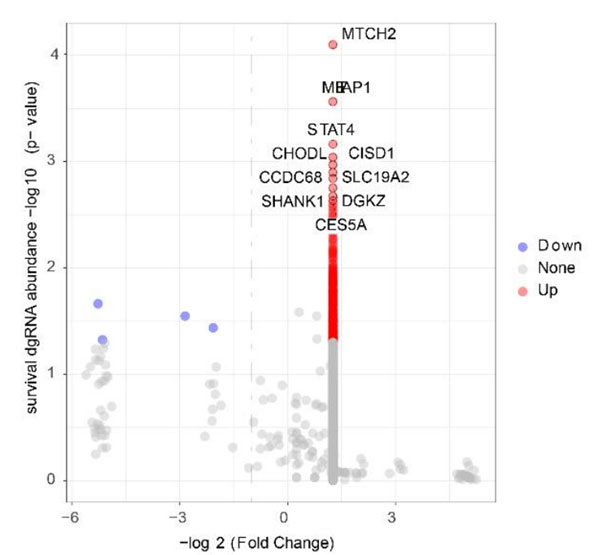
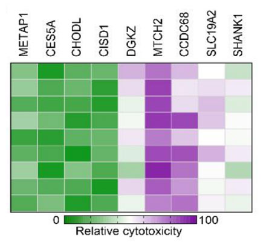
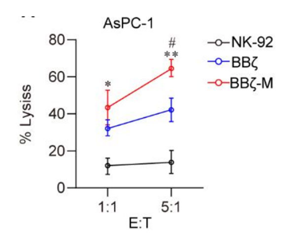
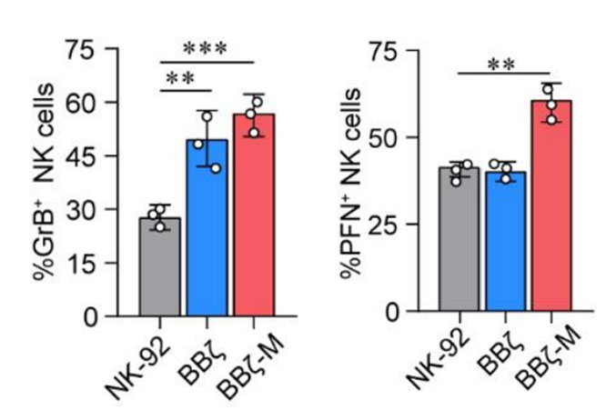
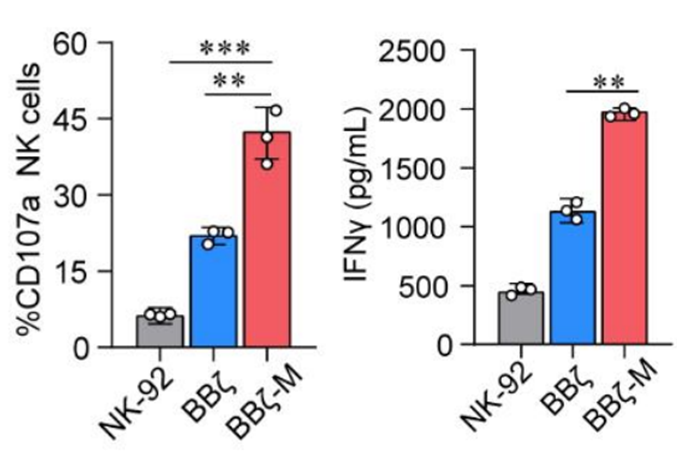
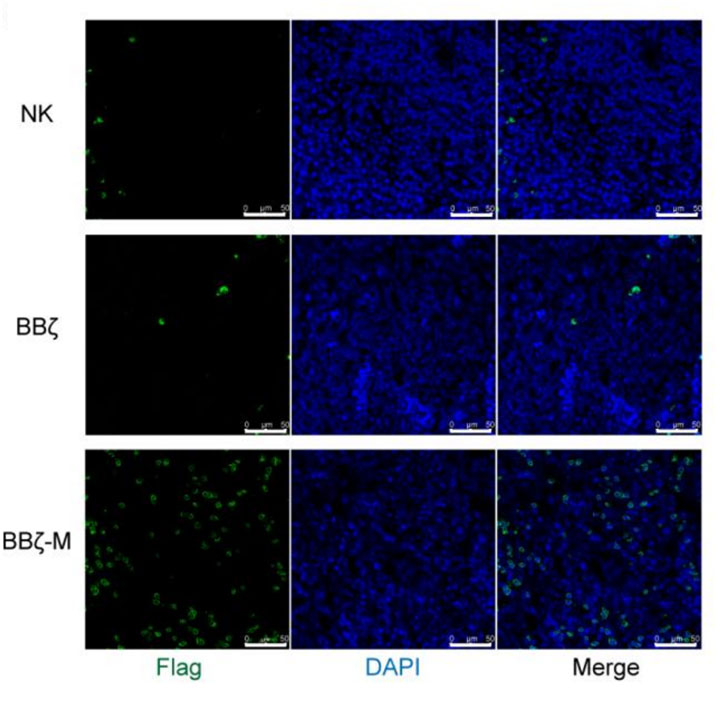
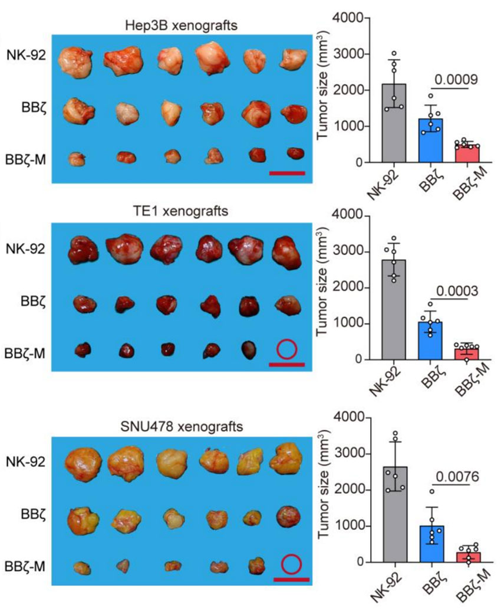
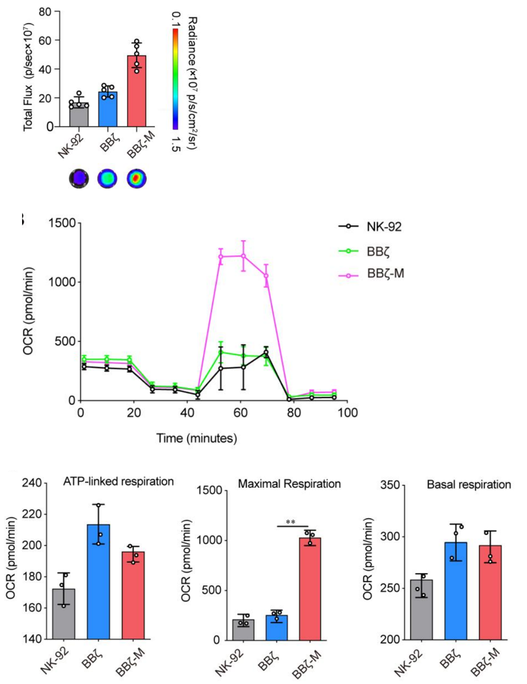

CRISPR Screening
Based on a false discovery rate (FDR) of 0.1%, we preliminarily targeted 10 genes.
Verification of MTCH2
The nine genes mentioned above were individually packaged in lentivirus, using to infect NK cells.
In vitro
NK cells overexpressing MTCH2 demonstrated the highest level of cytotoxicity compared to others.
 In vivo
In the orthotopic pancreatic cancer model, the MTCHT2-overexpressed group exhibited the most favorable response, illustrating that the expression of MTCH2 significantly enhanced the in vivo tumor-killing activity of NK cells.

Combination with CAR-NK Cells
3.1 booting anti-tumor effect
co-cultivation with AsPC-1 cells
For AsPC-1 cells
CAR-NK cells with MTCH2 overexpression enhanced the tumor-killing effect more significantly than NK-92 cells, inducing stronger cytotoxicity.
For CAR-NK cells
The levels of the potent molecules perforin (PFN) and Granzyme B (GrB) in NK cells with the BBζ-M construct were increased.
The expression of the activation marker CD107a in BBζ-M NK cells was specifically enhanced, with a higher secretion of interferon γ.
3.2 promoting persistence in TME
The BBζ-M NK cells were more abundant in the tumor tissue of pancreatic cancer, suggesting that MTCH2 may enhance the longevity of CAR-NK cells.
3.3 enhancing anti-tumor efficacy in vivo
When targeting different tumor models, BBζ-M NK cells all led to the most pronounced reduction in tumor growth, evidencing that MTCH2 enhanced them effectiveness in diverse solid tumors.
3.4 enhancing OXPHOS
co-cultivation with AsPC-1 cells
MTCH2 over-expressed BBζ NK cells exhibited higher ATP production and a substantial increase in mitochondrial maximal respiration, showing a greater extent of OXPHOS.
